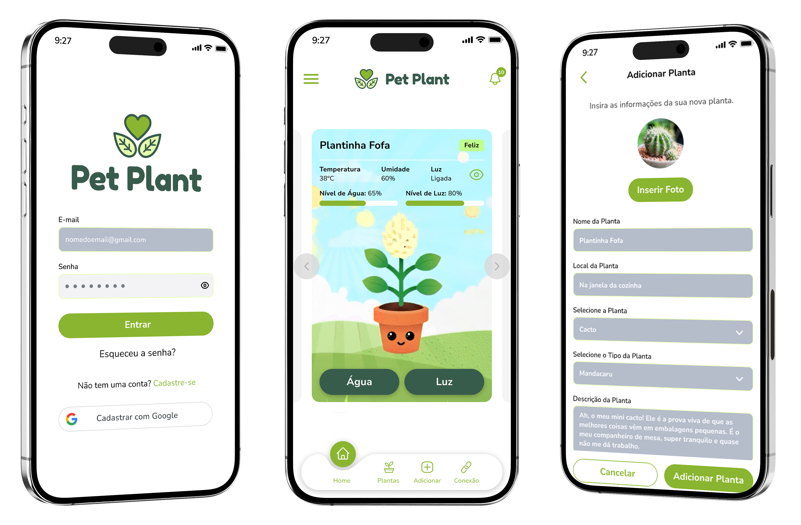
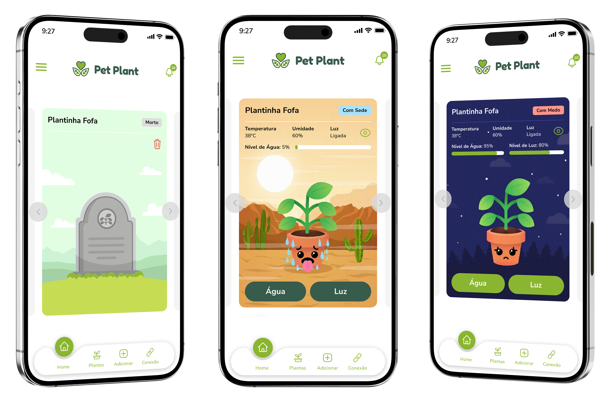

Case Study: Pet Plant – Monitoramento Inteligente e UX Botânica
O Pet Plant consolida a tecnologia IoT com uma interface de gestão completa, atendendo às necessidades de controle biológico em um ecossistema digital.
Objetivo: Criar uma interface que elimine a adivinhação, centralizando o controle biológico em um ecossistema digital.

01. O Desafio (O Problema)
O principal obstáculo para o sucesso no cultivo doméstico é a natureza "invisível" das necessidades das plantas. Sem dados concretos, o utilizador depende da tentativa e erro, o que gera frustração e a perda frequente de espécimes por cuidados inadequados (excesso de rega ou falta de nutrientes).
02. Minha Atuação e Tomada de Decisão
Sincronização e Monitoramento: Desenhei a arquitetura de informação para garantir que os dados de Humidade, Luz, Fertilidade e Temperatura fossem o núcleo da interface, permitindo uma leitura técnica mas acessível.
Sistemas de Lembretes Inteligentes: Implementei um sistema de notificações baseado em necessidades reais. Em vez de lembretes fixos por tempo, o design foca em alertas baseados no status do sensor.
Memória de Cultivo (Logs e Histórico): Tomei a decisão de incluir uma seção de histórico para que o utilizador possa visualizar a evolução da planta e transformar o app num diário de bordo.
Curadoria e Catálogo: Projetei um repositório de espécies para carregar automaticamente parâmetros ideais.
03. A Solução (Requisitos do Produto)
O Pet Plant consolida a tecnologia IoT com uma interface de gestão completa, atendendo aos seguintes requisitos fundamentais:
- • Dashboard de Monitoramento Vital: Controle em tempo real de luminosidade, temperatura ambiente, fertilidade do solo e níveis de humidade.
- • Gestão de Tarefas e Lembretes: Interface dedicada para visualização de regas pendentes, adubação e manutenção geral.
- • Histórico de Saúde: Registro cronológico de dados para análise de tendências e crescimento.
- • Catálogo de Espécies: Biblioteca integrada para consulta de requisitos específicos e identificação botânica.
- • Gestão Multidispositivo: Capacidade de monitorar e alternar entre diferentes sensores e plantas dentro do mesmo ambiente digital.
Interface Showcase

Telas do Pet Plant App: Login, Dashboard e Adicionar Planta

Variações de status da planta baseadas nos sensores (Feliz, Com Sede, Morto, Com Medo)
04. Resultados e Impacto
O design incentiva o aprendizado sobre botânica através da interação direta com os dados, elevando a confiança do utilizador.
- • Eficiência Operacional Doméstica: Redução do desperdício de água e insumos através de uma rotina de cuidados baseada em métricas precisas.
- • Melhoria na Taxa de Sobrevivência: Acompanhamento contínuo que permite identificar problemas ambientais antes que se tornem letais para a planta.
- • Experiência Educativa: O design incentiva o aprendizado sobre botânica através da interação direta com os dados, elevando a confiança do utilizador.